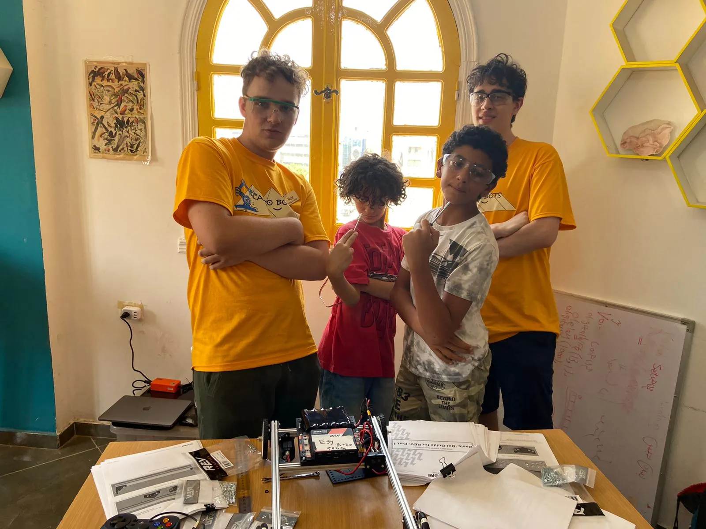
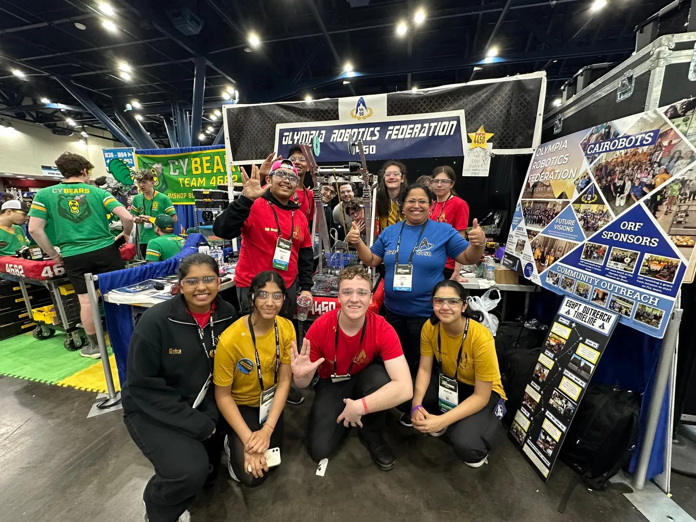
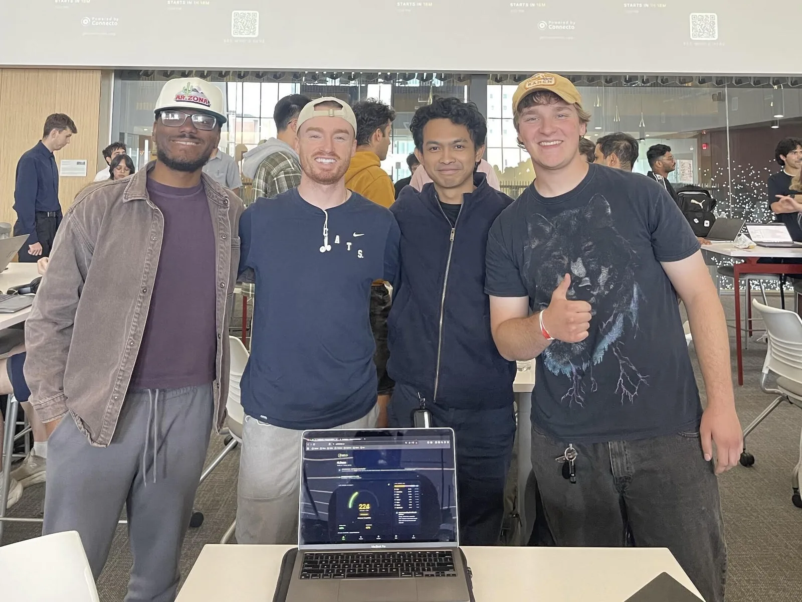

Foundations
I grew up in Olympia, Washington. My first experience with programming was through Scratch block programming in a 7th-grade visual communications class. We were given an open-ended assignment where the objective was to create anything that interested us. I ended up creating a pretty simple Space Invaders clone with a couple of levels, a final boss, sprites, and a very rudimentary bullet-physics system. While most of the work was just learning from examples on Scratch's website, this first interaction with programming concepts made me want to keep exploring. My teacher was pretty impressed and invited me to join the 8th-grade robotics class. That class introduced me to competitive robotics, which became a major part of my high school experience.
Around this time I also discovered "real" programming languages. I made the naive mistake of searching the internet for "What programming languages are used to make video games?" This sent me down a rabbit hole of trying to use C++ without understanding OOP, C, or pretty much anything else that you would need to know to even start learning C++. The only reason I didn't give up instantly was that I was following a beginner tutorial and framework on YouTube.
Shortly after, I had successfully set up Visual Studio 2017 and
created a basic game. It opened a window, rendered individual
putPixel(x, y) calls to form a crosshair, and polled
keyboard arrow input to move the crosshair between set locations.
However, I soon realized that I was in over my head, both academically
and technically.
This inspired me to research more entry-level paths to programming, which led me to learn the basics of HTML, CSS, JavaScript, and Python.
I have not lost my passion for "lower-level" development or game development. I still enjoy working close to the machine through projects like Mach/mach.h, and I want to spend more time exploring compilers and programming language implementation.
Work experience
Cloud Computing Preceptorship
During spring 2026, I worked as a teaching assistant for CSc 346: Cloud Computing at the University of Arizona.
Every week I held office hours where I helped students debug projects and development environments. The course covered cloud fundamentals through hands-on projects using services like AWS, EC2, S3, and Lambda.
Helping teach the course was just as valuable as taking it myself, if not more so. Debugging with students taught me to explain problems clearly and improved my technical communication skills.
Sound Psychiatric Services
I have worked as a contract software engineer for Sound Psychiatric Services since January 2021. I met the business owner through community outreach I was a part of in my high school robotics program, and they asked me to build the practice's public website. The site directs existing patients to its electronic medical record, payment, and telehealth portals. It also gives prospective patients the information they need before a visit. The initial design and implementation loop took about a month, and then my role shifted toward occasional maintenance tasks.
Once I started college, I wanted to do more than just front-end development for the practice. Initially, I identified that the practice was subscribed to a business web hosting package that was overkill for the simple static site. So I moved the website from the paid plan to free static hosting via Cloudflare Pages. More importantly, the transition was seamless for the business because the migration kept business-critical features such as domain and email services in place.
I also support custom in-house software for the practice that deals with non-confidential data. For example, I built a tool that reads serial data from a medical scale, displaying live weight on the doctor's PC. I built this after the scale's original display failed.
Work like this has taught me how to change small systems without disrupting the people who depend on them.
Education
I graduated from the University of Arizona in May 2026 with a B.S. in Computer Science. Before Arizona, I earned my associate's degree alongside my high school diploma through Washington state's Running Start program.
High School Robotics
For four years, I was part of Olympia Robotics Federation 4450, an FRC robotics team. I joined as a freshman when the team was quite small; four of us became its dedicated core that season. By the time I graduated, the team had grown to nearly 50 members. During my final two years on the team, I served as Safety Captain and Build Team Lead. This gave me direct responsibility for shop, robot, and event operations and safety.
FRC shaped how I think about engineering more than almost anything else I've done. I entered high school wanting to study computer science in college. I left knowing I wanted a career built around difficult technical problems, small teams, and building things that make a real impact.
Egypt expedition
During my third year, one of our mentors connected us with a mother whose son attended a STEM school in Cairo that used LEGO-based robotics. We decided to help bring metal-based competitive robotics to the school since FTC had yet to expand to the region.
Over the next 10 months, our team raised around $60,000 through community outreach. The following summer, 17 of us traveled to Cairo with several FTC kits, a custom curriculum, and an accompanying end-of-week challenge that I helped design.

The following season, our team also reached the FRC World Championship in Houston to compete for the Impact Award because of the team's outreach efforts in Egypt.

HackAZ 2026
In April 2026, I spent 24 hours with three teammates building GridWise Energy at Hack Arizona, the University's flagship hackathon, for the AI Environmental Sustainability track.
GridWise is a personal electricity carbon-footprint tracker for Arizona residents. Users log high-draw appliances such as HVAC systems, EV chargers, pool pumps, and dryers. The app estimates their emissions using their local grid's energy-source mix, tracks the grid's carbon intensity, and encourages users to shift heavy loads toward periods where solar and Palo Verde's nuclear generation are supplying more of the grid's energy.
We shipped it at griddaddy.us.

We chose a less serious name in an effort to compete for the most creative or funny name, so we took inspiration from Scrub Daddy.
The stack included React, TypeScript, Vite, Tailwind CSS, shadcn/ui, Vercel serverless functions, Neon Postgres, and Auth0. For the AI portion, we used a Gemini-backed assistant for usage insights and trained a small ridge-regression model to forecast grid carbon intensity.
The name
vetr0s comes from the Italian vetri, plural of vetro, meaning "glass" or "windowpane." I enjoy having an online alias for development-related things for a couple of reasons. Growing up playing Xbox, gamertags were an essential part of my introduction to the internet. When I got older, I found that a lot of programmers I look up to use Latin-inspired aliases, such as nothings and Tsoding. I also just think the domain looks better than something like nathantebbs.com.